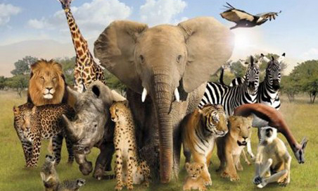
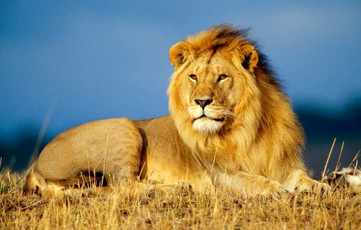
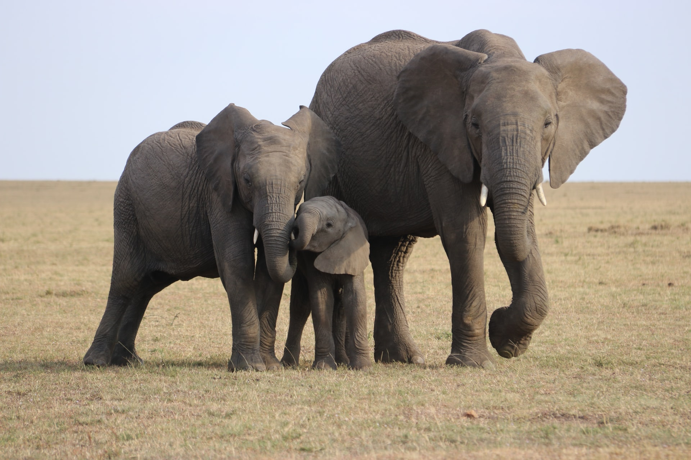
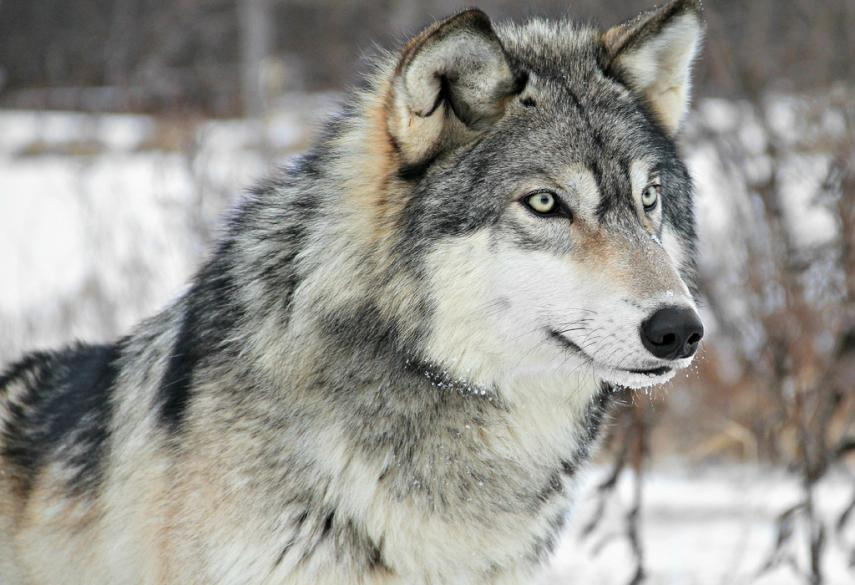
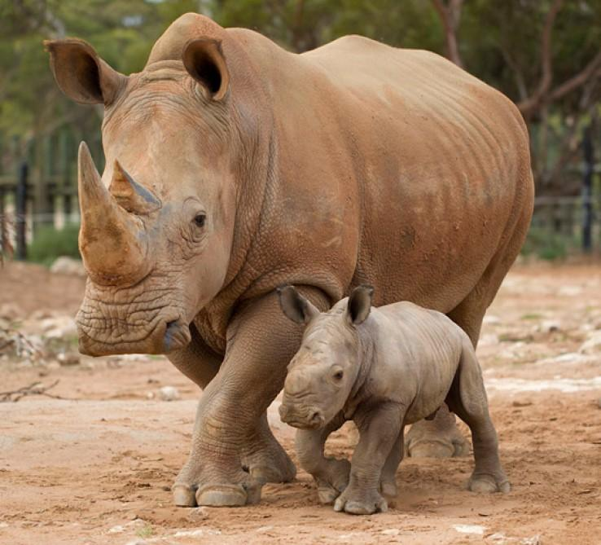

Heyvanlar (lat. Animalia və ya lat. Metazoa) — orqanizmlər toplusu, bioloji məkan, zoologiya elminin tədqiq obyekti. Ənənəvi olaraq heyvanlar hazır üzvi birləşləmələrlə qidalalanlar və daima hərəkət edənlər olaraq iki qrupa ayrılır. Heyvanlar həm də xarici və daxili quruluşuna, çoxalma və inkişafına, davranışına görə müxtəlifdir. Bu müxtəlifliyi aydın təsəvvür etmək üçün fili, tısbağanı, köpəkbalığı və ağcaqanadı müqayisə etmək kifayətdir. Heyvanlar hər yerdə – Yer üzərində, torpaqda, suda, havada yaşamağa uyğunlaşmışdır. Bir çox heyvanlar  bitkilərdə, digər heyvan orqanizmlərində, hətta insan orqanizmində yaşayır. Bütün heyvanlar yaşadıqları mühit şəraitinə uyğunlaşmışdır. Hava həyat tərzi (uçmaq həyatı) ilə əlaqədar quşlarda, yarasalarda, cücülərdə qanadlar inkişaf etmişdir, su həyatı ilə əlaqədar olaraq sürüşkən bədən forması, üzgəclər (balıqlarda) və ya kürəkşəkilli ətraf (balinada, suitidə) inkişaf etmişdir. Ona görə də heyvanın xarici quruluşuna gorə onun hansı mühitdə yaşamasını, necə hərəkət etməsini və qidasını necə tapmasını müəyyən etmək mümkündür. Heyvanlar aləmindən bəhs edən elm zoologiya adlanır.
Şir (lat. Panthera leo) — heyvanlar aləminin xordalılar tipinin məməlilər sinfinin yırtıcılar dəstəsinin pişiklər fəsiləsinin panter cinsinə aid heyvan növü.  Bədəninin uzunluğu təqribən 210 sm-ə, quyruğu 110 sm-ə, kütləsi 280 kq-a yaxın olur. Pəncəsi iri caynaqlı, tükü qısa, sarımtıl-qonurdur. Quyruğunun ucu qotaz kimidir. Başqa pişikkimilərdən fərqli olaraq, cinsiyyət dimorfizmi yaxşı nəzərə çarpır. Erkəyinin boynunda, başının bir hissəsində, sinəsində və gövdəsinin ön tərəfində açıq-sarı, qara yalı olur. Dişi və cavan şirlərin isə yalı olmur. Çox güclü və cəlddir. Antilop, zebr, zürafə, maral, sürünənlər və s. ilə qidalanır. Boğazlıq dövrü 116 gün çəkir, 1–6, adətən 3–4 bala (çəkisi 400 qram) doğur. Cinsi yetkinliyə 3 yaşında çatır. 30–35 il yaşayır. Şirin pələng və bəbirlə mələzləri də var. Şimal-qərbi Hindistanda və Afrikanın ekvator hissəsində (qoruqlarda) savanna, dağlıq yarımsəhra, çay sahili meşələr və səhralarda yaşayır. Hindistanda təbiətdə təxminən 200–250 şir yaşamaqdadır.
Fil — xortumlular dəstəsinin fillər (Elephantidae) ailəsini təşkil edən məməli heyvandır. Ümumi olaraq iki növ ayrılırlar: Asiya fili ( Elephas maximus ) və Afrika fili ( Loxodonta africana) Lakin mənbəələrlə əsaslasaq, Afrika savanna filinin (L. africana) və Afrika meşə filinin (L. cyclotis) hər birinin də iki ayrı növ olduğu irəli sürülür. Fillərə əsasən Afrikanın cənub-şərqində, Cənubi və Cənub-Şərqi Asiyada rast gəlinir. Mamontlar və mastodonlar kimi nəsli kəsilmiş növlərin də daxil olduğu proboscis dəstəsindən bu gün yalnız fillərin nəsli davam edir.  Quruda yaşayan ən böyük heyvan hesab edilən Afrika filinin erkəyinin boyu 4 m, çəkisi isə 7000kq-a çatır. Fillərin gözə çarpan və fərqləndirici xüsusiyyətləri arasında onların uzun Xortumu var ki, bu da müxtəlif məqsədlər üçün istifadə olunur, misal olaraq, obyektləri tutmaqda. Əlavə olaraq uzun və uclu kəsici dişlərindən əşyaları hərəkət etdirmək və torpağı qazmaq üçün istifadə edə bilirlər. Fil sümüyü mənbəyi hesab olunan bu kəsici dişlərdən qədim dövrlərdən bu yana döyüş zamanı silah kimi də istifadə edilir. Filin böyük və enli qulaqları onun bədən temperaturunu idarə etməyə xidmət edir. Afrika fillərinin qulaqları Asiya fillərinə nəzərən daha böyük olur və kürəyi konkav(dərə) formalıdır. Asiya fillərinin daha kiçik qulaqları olur və onlar qabarıq və ya düz arxa forması ilə seçilirlər. Afrika qolu fil skeleti. Fitofaq heyvanlara daxil olan fillər Savanna, meşə, səhra və bataqlıq kimi təbii yaşayış yerlərində rast gəlinir . Adətən su hövzələrinin yaxınlığında məskunlaşmağa üstünlük verirlər. Ətraflarına buraxdıqları təsirə görə kilit daşı növlərindən (keystone) biri hesab olunurlar. Digər heyvanlar əsas fillərdən uzaq dururlar və şir, pələng, hiyen və vəhşi itlər kimi yırtıcılar yalnız körpə fillərə hücum edirlər.
Canavar (lat. Canis) — heyvanlar aləminin xordalılar tipinin məməlilər sinfinin yırtıcılar dəstəsinin i̇tlər fəsiləsinə aid heyvan cinsi. Qurdun qidası ilin mövsümündən asılı olaraq müxtəlif növ gəmiricilər, quşlar, sürünənlər, onların yumurtaları, qurbağalar, kərtənkələlər, xırda yırtıcılar və kənd təsərrüfatı heyvanları təşkil edir. Yuvalarını qayalıqlarda və suya yaxın yerlərdə düzəldirlər. Qurdlar yaz başları cütləşirlər. Boğazlıq müddəti 63–65 gündür. Qışda cütləşir, yazda küçükləyirlər, 5–6 bala doğurlar. Balalar cütləşmədən iki ay sonra dünyaya gəlir. Bala dünyaya gələnə qədərsə erkək qurd dişisinin rahatlığı üçün əlindən gələni edir. Bunun üçün əvvəlcə erkək yerin altında bir yuva düzəldir və heç yorulmadan yuvanı və yuvaya gedən lağımı qazmağa başlayır. Lağımın uzunluğu adətən 9 metr olur. İşini başa çatdırdıqdan sonra isə hamilə yoldaşını yeraltı yoldan keçirərək yeni evinə aparır. Burda onu hər cür təhlükədən mühafizə edərək 2 ay müddətində dişisinə qulluq edir. Erkək qurd gecələr ova çıxır, əlinə nə keçirsə, toxunmadan dişisinə gətirir. Beləcə, 2 ayın tamamında bala dünyaya gəlir. Qurdların bir dəfəyə 4-dən 10-a qədər balası olur.  Balalar doğulduğu zaman gözləri görmür. Çəkik, mavi gözlər qurd balası doğulduqdan doqquz gün sonra gün işığını görməyə başlayır. Başlanğıcda balalarını ana südü ilə qidalandıran ana, iki həftə sonra onları süddən kəsir. Bundan sonra isə qəribə bir qidalanma taktikası başlayır. Balaların dişləri çıxmadığından, həmçinin mədələri möhkəm qidaya hazır olmadığından ana qurd mədəsindəki yarı həzm olunmuş qidaları qusaraq balalarını bununla doyuzdurur. Bir müddət sonra isə onlara erkəyi ilə bərabər yedikləri yeməkdən verməyə başlayır. Balalar 3 həftəlik olduqları zaman ana və ata birlikdə balaları yuvadan çölə çıxarır və onlara bundan sonra gündəlik həyata qatılaraq ovlamağı, başlarının çarəsinə baxmağı öyrədirlər. Qurdlarda balası olan qurd ailəsinə çox qəribə bir diqqət olur. Məsələn, balaları olan erkək qurd bir gün ov tapa bilməmişsə, o günü ətrafdakı qohum qurdlar öz ovlarından həmin ailəyə pay aparırlar. Qurdların arasında ailə bağları çox qüvvətlidir. Dişisi və balaları yuvada yatdıqları zaman erkək qurd bir təpənin başında oturaraq keşik çəkir. Hər hansı bir təhlükə hiss etdiyi anda isə ilk öncə kəsik-kəsik hürərək ailəsinə xəbər edir, daha sonra ucadan ulayaraq düşməni uzaqlaşdırmağı bacarır.
Kərgədanlar (lat. Rhinocerotidae) — heyvanlar aləminin xordalılar tipinin məməlilər sinfinin təkdırnaqlılar dəstəsinə aid heyvan fəsiləsi. Fəsiləyə Afrika və Asiyada yayılmış 5 növ daxildir. Bədəninin uzunluğu 2,5–4 m, süysününün hündürlüyü 1–2 m, kütləsi 3 t-dək olur. Hətta ağ kərgədanların kütləsi 5 t-a qədər ola bilir. Kərgədan planetimizdə böyüklüyünə görə fildən sonra ikinci quru heyvanıdır. Kərgədan nəhəng məməlidir. Qoca erkək kərgədanların kütləsi 4-5 ton, bədəninin uzunluğu 4,2 metrdir. Müasir kərgədanların burnundakı buynuz onların əsas fərqləndirici əlamətidir. Növündən asılı olaraq buynuzların sayı bir və ya iki ola bilər. Qazıntı halında tapılan əcdadlarının ümumiyyətlə buynuzu olmayıb. Kərgədanlar Cənub-Şərqi Asiyada və Afrikada məskunlaşıb. Xüsusən Cənubi Afrika Respublikası, Namibiya, Zimbabve, Konqo və Cənubi Sudanın şimal rayonlarındayayılıb.